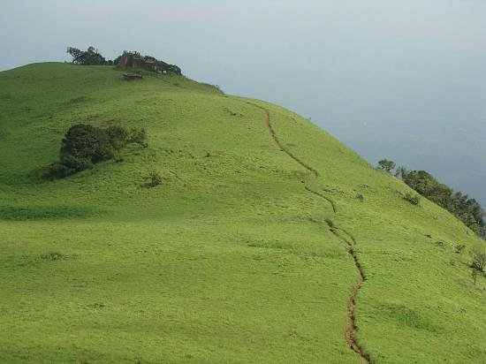

Muzhappilangad Beach
Muzhappilangad Drive-in Beach is a beach on the Malabar Coast in the state of Kerala in southwestern India

Paithamala
Paithalmala is a hill station in the Kannur district of Kerala in India. Located near Pottenplave village

Kannur Fort
St. Angelo Fort (also known as Kannur Fort or Kannur Kotta) is a fort facing the Arabian Sea, situated 3 km from Kannur.